Regionale visie · Wetenschap · Water · Energie · AI · Logistiek
Eén machine. Drie tunnels. Eén regio.
Zuid-Limburg bereidt zich voor op de Einstein Telescope. Wij stellen voor die jaren niet af te wachten, maar te benutten: eerst Valkenburg beschermen tegen water, dan Parkstad verbinden onder de Brunssummerheide, en met die kennis de telescoop bouwen. Daaromheen groeit een open concept over energie, mijnwater, data en logistiek, dat met iedere betrokkene wordt aangescherpt.
De kracht zit niet in de losse projecten, maar in wat ze voor elkaar mogelijk maken.
Binnen een straal van vijftig kilometer komen Nederlandse, Belgische en Duitse kennisindustrie en logistiek samen. Wat vaak als periferie wordt gezien, is in werkelijkheid het midden van Noordwest-Europa. Deze visie verbindt wateropgave, bereikbaarheid, wetenschap, energie en rekenkracht tot één regionale strategie met een duidelijke volgorde. Het eindbeeld over tien tot twintig jaar is een regio waar warmte, water, data en materialen in kringloop blijven en waar de deelscopes elkaar voeden in plaats van om dezelfde euro te concurreren. Hoe groter die scopes en hoe steviger ze verbonden zijn, hoe sluitender de kringloop wordt.
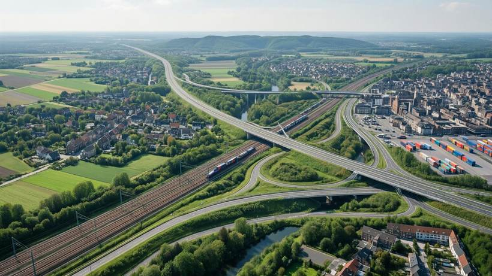
Conceptvisualisatie. Locaties en claims indicatief.
De route van de tunnelboormachine
Eerst het urgente probleem. Dan de verbinding. Dan de wetenschap.
Een tunnelboormachine kost tientallen miljoenen en staat bij de meeste projecten na één opdracht stil. Door haar achtereenvolgens in te zetten bouwt de regio kennis, personeel en ervaring op die straks nodig zijn voor de Einstein Telescope.
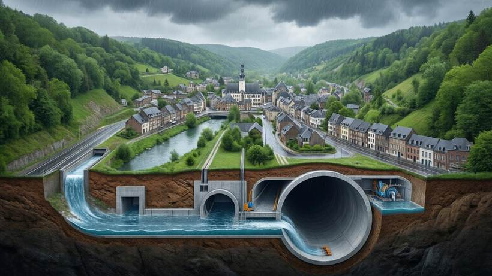
Fase 1 · Valkenburg
Waterafvoer waar de nood het hoogst is
Na juli 2021 weet iedereen wat extreme neerslag in het Geuldal doet. Een ondergrondse afvoer leidt piekwater gecontroleerd onder het dorp door en ontlast beken, riolering en straten.
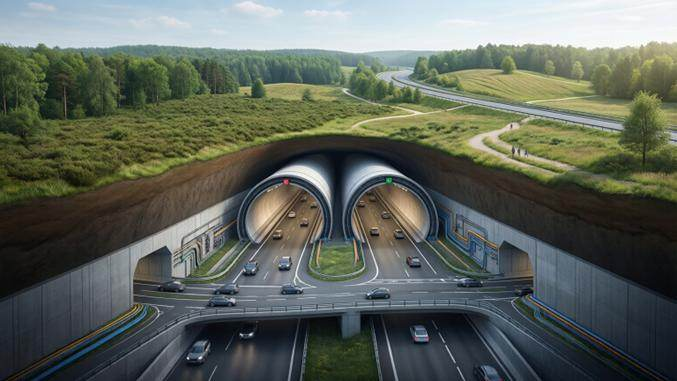
Fase 2 · Brunssummerheide
Binnenring en Buitenring direct verbonden
Twee tunnelbuizen onder het natuurgebied halen doorgaand verkeer uit de woonwijken. Langs de buizen komt ruimte voor glasvezel, stroom- en waterleidingen.
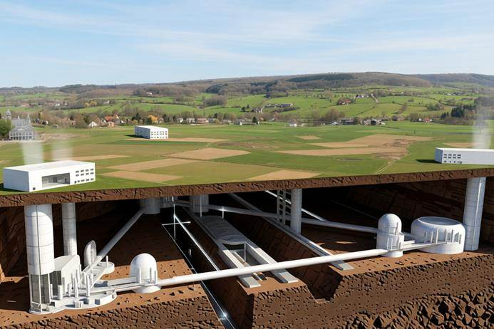
Fase 3 · Vaals
Een beproefde machine en een ervaren team
Als de bouw van de Einstein Telescope start, staat er een regio klaar met ondergrondse ervaring, eigen engineering en een getrainde ploeg.
Wat er boven de grond gebeurt
Negen projecten die elkaars restwarmte, data en bezoekers gebruiken
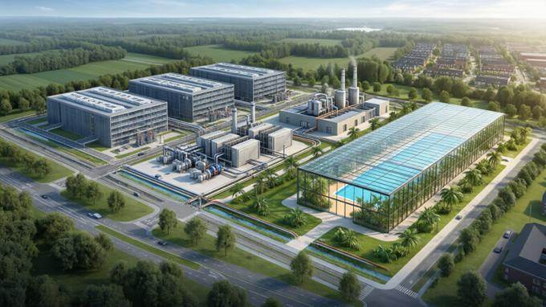
Energie · locatie in onderzoek
Energie-, data- en innovatiecluster
Ruimte, een netpositie en een bruikbare ondergrond vormen de basis voor een regionale hub. Meerdere plekken in Parkstad en de Westelijke Mijnstreek voldoen op papier aan die eisen, waarbij de oostflank van Brunssum eruit springt sinds de gemeenteraad daar op 10 maart 2026 een gebiedsvisie vaststelde met economie, energie en leisure als richting. Gebouwd volgens het PALET-principe: eerst besparen, dan duurzaam opwekken, dan lokaal uitwisselen en opslaan, en pas daarna de restvraag invullen. Daarmee sluit het cluster aan op de ambitie van Parkstad om in 2040 hernieuwbaar energieneutraal te zijnbron.
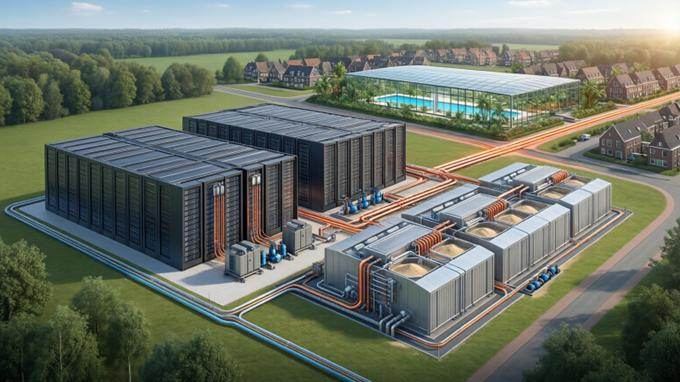
Energie · Warmte
Datacenter, zandbatterij en warmtenet
Restwarmte wordt opgeslagen in lokaal zand en verdeeld naar zwembad en woonwijken, naar het voorbeeld van Mijnwater in Heerlen.
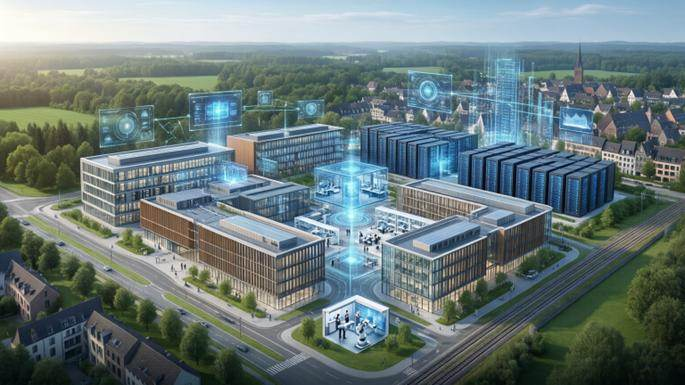
AI · Brightlands
AI-ontwikkelcentrum van Nederland
Rekenkracht, Brightlands, de Einstein Telescope en drie landen in één regio. Data-analyse voor de telescoop is het eerste anker.
Logistiek · MAA
Spoor, weg en lucht als één knooppunt
Maastricht Aachen Airport als schakel voor luchtvracht, met een pakketbuis boven bestaand spoor als nieuwe laag.
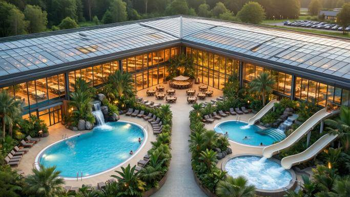
Leefkwaliteit · warmtenet
Subtropisch zwembad op restwarmte
Een volledig overdekt bad dat het hele jaar bruikbaar is, verwarmd met warmte die anders verloren gaat.
Leefkwaliteit · Limbo Dome
Limbo Dome als bovenregionale arena
Een weersonafhankelijke indoor locatie voor concerten, sport, beurzen en congressen, gericht op publiek uit Nederland, België en Duitsland. Daarmee komt er een bovenregionale trekker bij, voor publiek dat nu naar locaties buiten de regio uitwijkt.
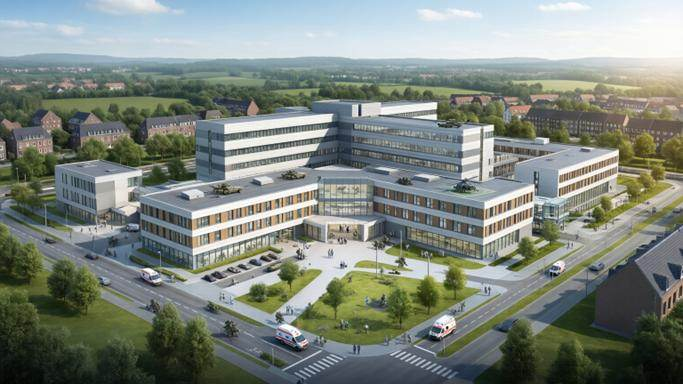
Zorg · Heerlen
Civiel-militair medisch centrum
Bestaande ziekenhuiscapaciteit koppelen aan gespecialiseerde militair-medische zorg, dicht bij AFNORTH en de Euregio.
Logistiek · Drones
Dronecorridor en palletvervoer over spoor
Pakketdrones over een vaste corridor langs het spoor, met palletvervoer per trein naar regionale hubs. De laatste kilometers gaan door de lucht, de zware stromen over het bestaande spoor.
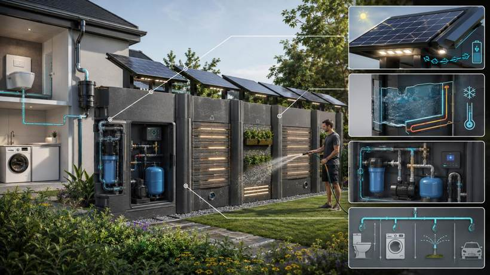
Water · Wijken
Slimme klimaatoplossingen uit lokale materialen
Modulaire producten die regenwater bufferen, stroom opwekken en het riool ontlasten, gemaakt van materialen uit de regio zelf. Lokaal produceren houdt de keten kort en de kringloop gesloten.
Scope energie · koelwater · circulariteit
Eigen basislast, zonder te wachten op het net
Een datacenter, een warmtenet en een industriecluster vragen stroom die er op het Limburgse net niet zomaar is. Enexis meldt in 2026 opnieuw nieuwe knelpunten in Limburg en houdt klanten op de wachtlijstbron. Heerlen trekt zelf 1,2 mln euro uit om netcongestie aan te pakkenbron. Daarom onderzoeken we modulaire thoriumreactoren van Copenhagen Atomics als eigen, regelbare bron.
Waarom modulair en thorium
1Fabrieksbouw in plaats van bouwput. De reactor past in een aangepaste 40 voets container en wordt op een lopende band gemaakt, niet op locatie gelastbron.
2Schaalbaar met de vraag. Eén unit levert 100 MW thermisch, gelijk aan 42 MW elektrischbron. Units bijplaatsen als de vraag groeit, in plaats van vooraf één groot vermogen bouwen.
3Koelwater en ruimte zijn er al. De oude mijngangen onder dit gebied leveren koeling rond 272 meter diepte en warmteopslag rond 730 meter, en lopen onder meerdere kandidaatlocaties door. De warmte die weg moet, is de voeding van het warmtenet.
4Circulair aan twee kanten. De thorium komt als bijproduct uit zeldzame-aardewinningbron, en het ontwerp is bedoeld om bestaand kernafval als brandstof te gebruiken. Een unit draait drie tot vijf jaar zonder bij te laden.
5Leefkwaliteit voorop. Een compacte footprint, warmte die in de regio blijft en geen extra hoogspanningslandschap.
6Koppeling met Chemelot. De grootste industriële afnemer van de regio elektrificeert en zoekt waterstof. Wat hier aan vermogen, warmte en netverzwaring wordt opgebouwd, is precies wat de Westelijke Mijnstreek nodig heeft om die transitie te halen.
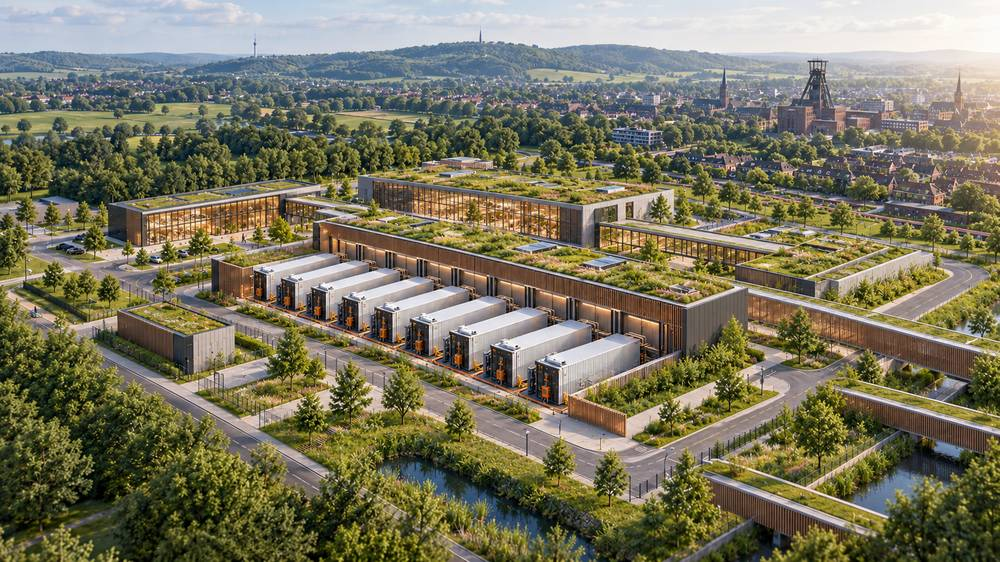
Energiecentrale Limburg: modulaire units op één terrein, met de regio op de achtergrond. Conceptvisualisatie.
Het PALET-principe als volgorde
Stap
Wat dat hier betekent
Waar het in dit plan zit
1. Besparen
De vraag omlaag brengen voordat er iets wordt bijgebouwd
Warmtepompen, isolatie, restwarmte hergebruiken in plaats van wegkoelen
2. Duurzaam opwekken
Zon, wind en bodemenergie binnen de regio
Zon op daken van bedrijventerreinen, Mijnwater als bodemenergiebron
3. Uitwisselen en opslaan
Wat de een over heeft, gaat naar de ander
Warmtenet, zoutopslag, zandbatterij, batterijopslag bij het datacenter
4. Restvraag invullen
Pas daarna regelbaar vermogen bijplaatsen
Energiecentrale Limburg, gedimensioneerd op wat er dan nog overblijft
Parkstad wil in 2040 hernieuwbaar energieneutraal zijnbron. Dit plan volgt die volgorde en rekent de reactoren bewust als sluitstuk, niet als startpunt. Daardoor dalen de aantallen hieronder zodra besparing en opwekking harder gaan dan verwacht.
Hoeveel reactoren heeft Parkstad nodig tot 2035
Kort antwoord: vijf tot zes als je puur naar energie-inhoud kijkt, twaalf tot dertien als alles als elektriciteit geleverd moet worden. Met elektrificatie via warmtepompen en elektrisch vervoer kom je realistisch op zeven tot acht uit.
Scenario
Nu (4.097 GWh)
2035 (circa 3.180 GWh)
Wat het betekent
A. Alles als warmte theoretisch minimum
6 units
5 units
Werkt niet in de praktijk: verkeer en een deel van de industrie kunnen niets met warmte
B. Alles als stroom zonder efficiëntiewinst
13 units
10 units
Duurste route, want de omzetting naar stroom kost tweederde van de warmte
C. Volledig geëlektrificeerd vraag circa 50% lager door warmtepompen en EV
7 units
6 units
Het realistische scenario, zeker in combinatie met warmtelevering aan Mijnwater
Advies voor de aanvraag
7 tot 8 units
Scenario C plus één tot twee reserve-eenheden voor onderhoud en storing
Rekenbasis. Per unit 100 MWth, gelijk aan 42 MWe, bij 90 procent beschikbaarheid circa 790 GWh warmte of circa 330 GWh stroom per jaarbron. Vraag Parkstad 2023: 4.097 GWh, gemiddeld 0,47 GW. Voor 2035 is geïnterpoleerd tussen de PALET-doelen van 3.355 GWh in 2030 en 3.000 GWh in 2040bron. Deze vraagcijfers moeten nog tegen PALET 3.0 worden gelegd voordat ze in de aanvraag gaan.
Wat je met de warmte kunt doen
Copenhagen Atomics levert energie als dienst: zout van 550 tot 600 graden aan de klantzijde, afgerekend per MWhbron. Reken voor planning met circa 560 graden en houd rekening met 20 tot 40 graden verlies na de warmtewisselaar aan onze kant. Het zout dat wij krijgen zit in een tweede circuit en is niet radioactief.
Toepassing
Benodigde temperatuur
Past het
Zoutopslag, zoals bij zonnecentrales
290 tot 565 °C
Ja, sluit vrijwel exact aan
Zandbatterij
400 tot 600 °C
Ja, laden tot circa 500 tot 530 °C na de wisselaar
Stoomturbine voor stroom
500 tot 550 °C
Ja
Waterstof via hogetemperatuur-elektrolyse
700 tot 850 °C
Deels, stoom voeden en de rest elektrisch bijverwarmen
Ontzouting van water
70 tot 120 °C
Ruim, juist met restwarmte na de turbine
Warmtenet hoge temperatuur
70 tot 120 °C
Ja
Mijnwater als lage temperatuurnet
15 tot 30 °C
Ja, als laatste trap
Staal, cement en glas
900 tot 1.500 °C
Nee, alleen voorverwarmen
Cascadering levert het meeste op
560 graden naar turbine of opslag, circa 100 graden naar ontzouting of het warmtenet, circa 30 graden naar Mijnwater. Zo benut je per unit een veel groter deel van de 100 MW thermisch dan alleen de 42 MW stroom. Ontzouting op hoge temperatuur is verspilling: dat hoort achteraan in de keten. Met zout van 560 graden ligt directe zoutopslag meer voor de hand dan zand, want dat is hetzelfde medium en bewezen techniek. Zand blijft interessant als goedkope winterbuffer die ook met overtollige zonnestroom geladen kan worden.
Kosten en kanttekeningen
Post
Bedrag
Toelichting
Per unit, eenmalig
€ 45 mln
Te betalen twee jaar voor levering, inclusief bouw en brandstofbron
Per unit, jaarlijks
€ 1,8 mln
Minimaal tien jaar, inclusief onderhoud en brandstoflevering
Acht units
€ 360 mln + € 14 mln per jaar
Over vijftig jaar komt dat volgens de leverancier neer op circa 8 euro per MWh elektrisch
Niet inbegrepen
nader te bepalen
Turbines, netaansluiting, terrein, gebouwen, vergunningen en bedrijfsvoering. Reken voor het totale project op een veelvoud
Over deze bedragenOpgaven van de leverancier staan in dollar, omgerekend tegen 1 euro is 1,1159 dollar, koers 12 oktober 2026. De leverancier geeft zijn prijzen in dollar op, dus bij een andere koers schuift het bedrag mee. Het zijn bovendien opgaven, geen offerte.
Vier dingen die eerst opgelost moeten wordenTijdlijn. Commerciële units van 100 MWth staan gepland voor begin jaren dertig. Er zijn twee prototypes gebouwd en een derde wordt in 2026 verwacht. Levering in Nederland voor 2035 is onzeker. Vergunning. Nergens ter wereld is een thorium-zoutsmeltreactor vergund. De ANVS heeft voor dit type nog geen kader. Dat traject duurt op zichzelf al jaren. Pieken. Reactoren leveren basislast, terwijl de wintervraag naar warmte een veelvoud van het gemiddelde is. Zonder opslag heb je meer vermogen nodig. De mijngangen zijn juist geschikt als buffer. Net. Driehonderd tot vierhonderd MW extra op het Parkstad-net vraagt forse verzwaring bij Enexis en TenneT, in een gebied dat nu al met congestie kampt.
Scope 1 · 2027
Haalbaarheid en offerte
Vraagprofiel toetsen aan PALET 3.0, locatiescan over meerdere kandidaatlocaties, koelwater- en warmtebalans, cascadeontwerp, vergunningsroute via de Kernenergiewet en de ANVS, plus een offerte van Copenhagen Atomics met gegarandeerde aanvoer- en retourtemperatuur en deellastgedrag. Geraamd studiebudget 250.000 tot 500.000 euro.
Scope 2 · 2028 tot 2030
Warmtekoppeling en opslag
Het datacenter groeit in stappen mee met de beschikbare stroom. Warmtekoppeling met Mijnwater, zoutopslag voor de hoge temperatuur en een zandbatterij voor de winterpiek worden in deze fase ontworpen.
Scope 3 · vanaf 2031
Afname of eigen levering
Afnemen van een exploitant, een joint venture of zelf exploiteren, opgebouwd naar zeven tot acht units. De eerste testreactor draait naar verwachting in 2028 en commerciële units komen begin jaren dertig, dus deze scope is een optie met een datum, geen belofte.
Scope energie · leveranciersvergelijking
Copenhagen Atomics naast het Franse en Nederlandse alternatief
De vraag die in elk gesprek terugkomt is wat zo'n reactor nu echt kost. Het eerlijke antwoord: maar één van de drie partijen publiceert cijfers waar je mee kunt rekenen, en ook dat zijn opgaven van de leverancier en geen offerte. Hieronder staat wat er wel en niet openbaar is.
Copenhagen Atomics Denemarken
Thorizon One Nederland en Frankrijk
Naarea XAMR Frankrijk
Vermogen per unit
100 MW thermisch, circa 42 MW elektrisch
250 MW thermisch, 100 MW elektrisch
Circa 40 MW elektrisch
Brandstof
Thoriumcyclus met een startlading plutonium uit opgewerkte splijtstof
Langlevend kernafval gemengd met thorium
Gebruikte splijtstof en plutonium, geen thoriumcyclus
CAPEX per unit
Circa 45 mln euro, opgave van de leverancier
Niet gepubliceerd
Niet gepubliceerd. Naarea noemt circa 2 mld euro tot 2030 voor ontwikkeling, brandstoffabriek en reactorfabriek samen
OPEX per unit per jaar
Circa 1,8 mln euro, opgave van de leverancier
Niet gepubliceerd
Niet gepubliceerd
Kosten per MWh
Circa 8 euro over vijftig jaar, onze eigen som op die twee opgaven
Niet te berekenen zonder prijs
Niet te berekenen zonder prijs
Units voor het scenario Parkstad
Zeven tot acht
Twee tot drie
Zeven tot acht
Stand van zaken
Kritisch experiment niet eerder dan 2028, nergens ter wereld een vergunde unit
42,5 mln euro opgehaald, bouwstart beoogd 2030, pilot midden jaren dertigbron
Prototype beoogd 2028, ronde van 150 mln euro in voorbereidingbron
Voordeel
Containerformaat en fabrieksbouw, laagste gepubliceerde prijs, warmte op hoog niveau voor de cascade
Nederlandse partij, al in beoordeling bij de Nederlandse en Franse toezichthouder, samenwerking met EPZ en NRG PALLAS, provincies als investeerder
Frans staatsprogramma France 2030 erachter, verbrandt bestaand afval
Nadeel
Geen vergunde referentie, veel units nodig, startlading plutonium ligt politiek gevoelig
Prijs onbekend, grotere footprint, cartridgewissel elke vijf tot tien jaar
Minste publieke cijfers, circa 2 mld euro nodig voor de eerste unit, geen thorium
Wat dit voor de businesscase betekentEr bestaat geen Franse thoriumcentrale met een openbare businesscase om naast Copenhagen Atomics te leggen. Wie het dichtst in de buurt komt is Thorizon, en dat is een Nederlandse partij met Frans staatsgeld. Daarom loopt de haalbaarheidsstudie op twee sporen: Copenhagen Atomics als kostenreferentie en Thorizon als vergunningsroute, met bij allebei een geprijsde offerte voordat er over een locatie wordt besloten.
Restwaarde en residual profitBij elke scope rekenen wij niet alleen met de exploitatie. De restwaarde van de installatie, de kennis die hier wordt opgebouwd en de residual profit na afschrijving horen in dezelfde ROI-som. Turbines, netaansluiting, putten en leidingen houden waarde ook als de reactorkeuze later verandert, en een meetreeks over de ondergrond wordt elk jaar meer waard omdat je hem niet kunt kopen.
Scope water · ondergrond
Het mijnwater stijgt en komt bij het grondwater uit
Onder Parkstad staat een onzichtbaar reservoir. Sinds het sluiten van de mijnen stijgt het mijnwater met ongeveer twee meter per jaar en er resten nog enkele tientallen meters tot het bovenste grondwaterbron. Staatstoezicht op de Mijnen stelde vast dat het hydraulisch evenwicht nog niet is bereikt en dat sterk gemineraliseerd mijnwater in delen van de voormalige concessie Emma binnen decennia in de bovenliggende watervoerende pakketten kan komen, met hogere chloride- en sulfaatgehaltes als gevolgbron.
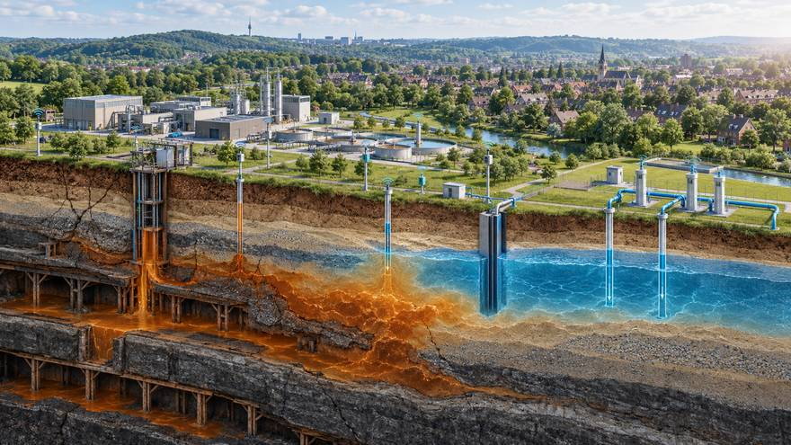
Stijgend mijnwater, het bovenste grondwaterpakket, meetnet en zuivering in één beeld. Conceptvisualisatie.
Wat wij hieraan toevoegen
1Meten voordat het misgaat. Uitbreiding van het peilbuizennet en satellietmetingen van bodembeweging, zoals Staatstoezicht op de Mijnen adviseert, gekoppeld aan een openbaar dashboard voor de regio.
2Drinkwater beschermen. Een modelstudie voor het gebied tussen de Benzenradebreuk en de Heerlerheidebreuk, samen met het waterbedrijf, de provincie en het waterschap.
3Van risico naar bron. Mijnwater is in Heerlen al een warmtebron. Dezelfde stroom die we moeten beheersen, kan warmte en koeling leveren als we hem oppompen, benutten en zuiveren.
4Koppeling met de ondergrondse projecten. Elke boring voor water of tunnel levert meetgegevens over dezelfde ondergrond. Eén meetnet dient drie doelen.
Waarom dit in dit plan hoortEen subsidieaanvraag wordt sterker van een probleem dat niemand kan negeren. Wateroverlast in Valkenburg is er zo een. Stijgend mijnwater onder Parkstad is de tweede.
Scope logistiek
Drones voor pakketten, spoor voor pallets
Boven de bestaande spoorcorridor ligt ruimte die niemand gebruikt. Een vaste dronecorridor langs het spoor brengt pakketten tussen hubs, terwijl pallets per trein gaan naar dezelfde knooppunten. Het spoor is er al, de hubs staan er al en de laatste kilometers zijn nu juist het duurste deel van de keten.
1Vaste corridor. Vliegen boven bestaand spoor betekent vliegen boven een strook die al voor transport is bestemd, met minder hinder voor woonwijken.
2Pallets over het spoor. Regionale hubs bij Maastricht Aachen Airport en Parkstad nemen palletstromen over van de weg.
3Grensoverschrijdend. Aken, Luik en Maastricht liggen binnen één vlucht van elkaar, wat dit een logisch proefgebied maakt voor Nederlandse, Duitse en Belgische regels.
4Realistisch over regelgeving. Drones buiten zicht van de bestuurder vragen toestemming van de luchtvaartautoriteit. Dat is de eerste horde in deze deelscope, niet de techniek.
Dronecorridor boven bestaand spoor met regionale hub. Conceptvisualisatie.
Op de kaart
Zeven plekken, één samenhangend plan
Valkenburg
Ondertunneling voor waterafvoer in het Geuldal
Brunssummerheide
Twee tunnelbuizen tussen Binnenring en Buitenring
Vaals
Einstein Telescope, wetenschappelijk einddoel
Oostflank Brunssum en omgeving
Energie, data, zandbatterij en subtropisch zwembad
Heerlen / Brightlands
AI-ecosysteem en civiel-militair medisch centrum
Maastricht Aachen Airport
Multimodale logistiek over spoor, weg en lucht
Centraal Zuid-Limburg
Limbo Dome, bovenregionale evenementenlocatie
Heel de regio
Pakketbuis boven het spoor en slimme schuttingen in wijken
Niet ongekend
Zo zijn vergelijkbare plannen in Nederland gefinancierd
Grote regionale projecten krijgen geld als Rijk, provincie, Europa en markt samen instappen. Deze vijf zijn goedgekeurd en laten zien welke loketten openstaan.
Gemeente Heerlen: circa € 5 mln voor vergunningverlening, projectbegeleiding en initiatieven, circa € 1,2 mln voor netcongestie, looptijd 2027 tot 2030
Geen subsidiepot, wel capaciteit. Hiermee kan een initiatief als dit sneller door de gemeente worden beoordeeld, met een principeverzoek als startpunt
Rijk, Provincie Limburg, Maastricht en Meerssen; leefbaarheidsbaten volgens CPB
Tunnel plus gebiedsontwikkeling levert meer op dan hij kost
Bij de A2 is € 220 mln de door het CPB gemeten leefbaarheidswinst, niet de bouwsom. Bedragen komen uit de gelinkte bronnen, stand oktober 2026. Elk bedrag op deze site heeft een bron. Ziet u een cijfer zonder bron of met een betere bron, laat het weten, dan passen we het aan.
Van compensatie naar investeringOver de na-ijlende gevolgen van de mijnbouw loopt al jaren een discussie over schade en erkenning. Dat gesprek levert op zichzelf geen bedrijvigheid op. Dit plan draait het om: wat er aan middelen naar de regio komt, landt in bezit dat blijft renderen, namelijk een meetnet, een warmtenet, ondergrondse infrastructuur en opgeleid personeel. Een regio met een uitvoerbaar plan wordt eerder bediend dan een regio met een claim.
Hoe wij hier indirect aanspraak op makenDe Ontwikkelimpuls van Heerlen is bedoeld om goede initiatieven sneller door het gemeentelijke proces te krijgen. Verbonden Limburg dient zich daarom aan als één samenhangend initiatief met een principeverzoek per deelscope, zodat de gemeentelijke capaciteit en de aanpak van netcongestie direct aan dit project ten goede komen. De gemeente wil bij een compleet principeverzoek binnen acht weken duidelijkheid gevenbron.
Doe mee
Een subsidieaanvraag wint op draagvlak. Uw naam telt.
Beoordelaars kijken naar wie er achter een plan staat. Elke steunbetuiging, partner en pilotlocatie die vóór 5 oktober binnen is, komt in het conceptplan.
SteunbetuigingUw organisatie staat achter de visie. Wij sturen een korte intentieverklaring ter ondertekening.
ConsortiumpartnerU levert kennis, capaciteit of cofinanciering en schuift aan bij de aanvraag.
PilotlocatieGrond, dak, wijk of bedrijventerrein beschikbaar voor een eerste proef, bijvoorbeeld de regenwaterschutting.
Op de hoogte blijvenU ontvangt het conceptplan en de uitnodiging voor de presentatie.
Bijna klaar
Uw e-mailprogramma opent met de aanmelding
Druk daar op verzenden. Opent er niets? Kopieer dan de tekst hieronder en mail die naar .
Tijdlijn
Vier tot zes jaar van startpunt tot realisatie
De tijdlijn hieronder telt vanaf het moment dat het startsein valt, niet vanaf een vaste datum. Zo blijft hij bruikbaar terwijl partners aanhaken en besluitvorming loopt. Zodra het startpunt vastligt, worden deze stappen van echte data voorzien.
MAAND 0 TOT 3
Scopes vastleggen
Deelscopes beschreven, cijfers onderbouwd met bronnen, eerste steunpartners in het conceptplan.
MAAND 3 TOT 6
Gesprekken en offertes
Waterschap, gemeenten, Brightlands, Mijnwater, netbeheerder en Copenhagen Atomics. Principeverzoek bij de gemeente.
MAAND 6 TOT 12
Eerste onderzoeksaanvragen
Per deelscope een kleine aanvraag in plaats van één mega-aanvraag. Klein beginnen, snel resultaat laten zien.
JAAR 1 TOT 2
Haalbaarheid fase 1
Waterafvoer Valkenburg en de energiescope naar een volwaardige studie met kostenraming en tracékeuze.
JAAR 2 TOT 4
Vergunningen en financiering
Besluitvorming bij Rijk, provincie en gemeenten, financieringsmix rond, aanbesteding en contractering van de tunnelboormachine.
JAAR 4 TOT 6
Realisatie fase 1
Uitvoering van de waterafvoer, voorbereiding van de tunnelbuizen onder de Brunssummerheide en de eerste warmtekoppelingen in bedrijf.
Wat buiten dit venster valt
Twee onderdelen hebben hun eigen klok. De Einstein Telescope kent een bouwstart rond 2036, dus die ligt per definitie achter deze zes jaar. De Energiecentrale Limburg hangt aan commerciële units die begin jaren dertig beschikbaar komen en aan een vergunningstraject dat in Nederland nog geen kader heeft. Binnen vier tot zes jaar zijn daar de haalbaarheid, de offerte, de locatie en de vergunningsroute af, niet de bouw.
Levend concept · versie 1.1 · bijgewerkt 26 oktober 2026
Dit plan is niet af, en dat is het punt
Ideeën groeien. Deze pagina toont daarom altijd de actuele scope, met per onderdeel de status. Deelscopes worden toegevoegd of aangepast zodra dat het project verder helpt. Wie meedenkt, ziet zijn inbreng hier terug.
Scope 01
Waterafvoer Valkenburg
Ondergrondse afvoer in het Geuldal, eerste inzet van de tunnelboormachine
In gesprek
Scope 02
Tunnelbuizen Brunssummerheide
Verbinding Binnenring en Buitenring, met ruimte voor kabels en leidingen
In uitwerking
Scope 03
Einstein Telescope als einddoel
Regionale kennis en materieel klaar voor de bouw vanaf circa 2036
Onderbouwd
Scope 04
Energie, koelwater en circulariteit
Energiecentrale Limburg: zeven tot acht modulaire thoriumreactoren, cascadering naar warmtenet, zoutopslag en Mijnwater
In uitwerking
Scope 05
Datacenter en AI-capaciteit
Modulair meegroeien met de beschikbare stroom, restwarmte als product
In uitwerking
Scope 06
Mijnwater en drinkwater
Meetnet, modelstudie en benutting van stijgend mijnwater
Nieuw
Scope 07
Drones en palletvervoer over spoor
Dronecorridor boven bestaand spoor, palletstromen naar regionale hubs
Nieuw
Scope 08
Limbo Dome als bovenregionale arena
Weersonafhankelijke indoor locatie voor concerten, sport, beurzen en congressen
Idee
Scope 09
Logistiek knooppunt en Maastricht Aachen Airport
Spoor, weg en lucht als één grensoverschrijdend netwerk
Idee
Scope 10
Civiel-militair medisch centrum Heerlen
Bestaande ziekenhuiscapaciteit koppelen aan defensie en de Euregio
Idee
Scope 11
Chemelot en de Westelijke Mijnstreek
Elektrificatie, waterstof en netverzwaring voor de grootste werkgever van de regio
Nieuw
Scope 12
Brede welvaart en vakmanschap
Opleidingsplaatsen in ondergrondse techniek, mbo-samenwerking en meetbare effecten per wijk
Nieuw
Scope 13
Subtropisch zwembad op restwarmte
Overdekt bad dat het hele jaar open is, verwarmd met warmte die anders wordt weggekoeld
Idee
Scope 14
Klimaatoplossingen uit lokale materialen
Modulaire producten die regenwater bufferen en stroom opwekken, gemaakt in de regio zelf
Idee
Wijzigingen
Versienummer naar 1.1. De drie presentaties, deze site en de pdf-versies dragen vanaf nu hetzelfde nummer, zodat duidelijk is welke stukken bij elkaar horen.
Scope 08 gesplitst in drie losse initiatieven: 08 Limbo Dome, 13 subtropisch zwembad en 14 klimaatoplossingen uit lokale materialen. Ze kunnen elkaar versterken, maar elk heeft een eigen besluit, exploitant en financiering.
Naam gewijzigd in Verbonden Limburg. Locatie breder gezet: eisen in plaats van één perceel. Vergelijking van Copenhagen Atomics met Thorizon en Naarea toegevoegd, plus restwaarde en residual profit als vaste post in de ROI.
Scope 11 Chemelot en Westelijke Mijnstreek en scope 12 Brede welvaart en vakmanschap toegevoegd, plus een alinea die de compensatiediscussie omkeert naar investering.
Tijdlijn omgezet naar vier tot zes jaar vanaf startpunt, zonder vaste datums.
PALET-principe toegevoegd als volgorde voor het energie-, data- en innovatiecluster.
Energiecentrale Limburg uitgewerkt: scenario-berekening tot 2035, temperatuurcascade, kosten per unit en de vier openstaande knelpunten.
Scopes energie, mijnwater en drones toegevoegd. Alle bedragen voorzien van een bronlink.
Eerste versie online met de route van de tunnelboormachine en zes pijlers.
Meedenken of iets rechtzetten
Een deelscope die ontbreekt, een cijfer dat niet klopt, een bezwaar dat eerst op tafel moet: stuur het in. Inbreng wordt opgenomen in de volgende versie, met vermelding van de inbrenger als die dat wil.
Een groep Zuid-Limburgse ondernemers met ervaring in energie, infrastructuur en internationaal projectmanagement. Het doel is een gedragen plan dat overheden en fondsen serieus kunnen beoordelen.
Is dit al besloten beleid?
Nee. Dit is een conceptvisie. Locaties, beelden en claims zijn indicatief. Juist daarom zoeken we nu partners die het plan scherper en haalbaarder maken.
Wat kost meedoen?
Een steunbetuiging kost niets. Consortiumpartners spreken per aanvraag af wat zij inbrengen, in uren, kennis of cofinanciering.
Waarom begint het plan in Valkenburg?
Omdat het risico daar nu al bestaat. Een project dat een acuut probleem oplost, is het sterkste begin van een aanvraag en bouwt direct ervaring op voor de volgende fases.
Kernenergie in Parkstad, is dat realistisch?
Nog niet. De techniek van Copenhagen Atomics is pre-commercieel: de eerste kettingreactie staat niet voor 2028 gepland en commerciële inzet rond 2030 tot 2031. Wat nu wel kan, is de haalbaarheid onderzoeken, een offerte opvragen en de vergunningsroute in kaart brengen. Zonder dat onderzoek blijft het een mening in plaats van een plan.
Waarom staan er cijfers op deze site die nog niet vaststaan?
Omdat een open concept beter wordt van tegenspraak. Elk bedrag heeft een bronlink en elke aanname staat erbij. Klopt iets niet, dan passen we het aan en komt het in het wijzigingenlogboek te staan.
Wat gebeurt er met mijn gegevens?
We gebruiken ze alleen om contact met u op te nemen over dit initiatief en, als u daarvoor tekent, om u als steunpartner te noemen. U kunt dat op elk moment intrekken.